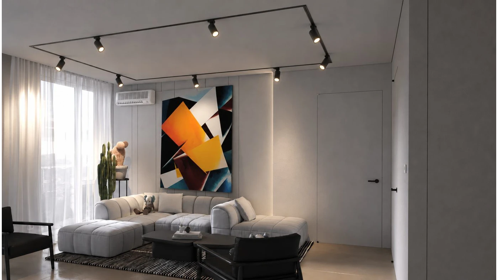
В интерьере
Разделяйте освещение зоны отдыха, рабочего места и предметов декора.
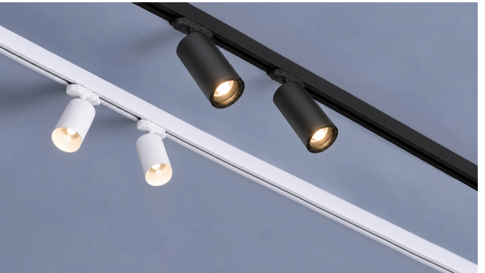
Три независимые группы света
на одном шинопроводе. Для жилых
и коммерческих интерьеров.
Общий свет, акценты и подсветка отдельных зон — на одной трековой линии с раздельным управлением тремя группами.

Разделяйте освещение зоны отдыха, рабочего места и предметов декора.
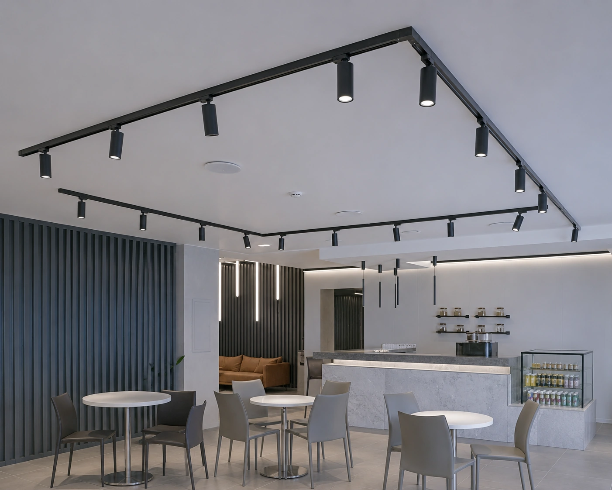
Управляйте светом торгового зала, витрин и отдельных экспозиций.
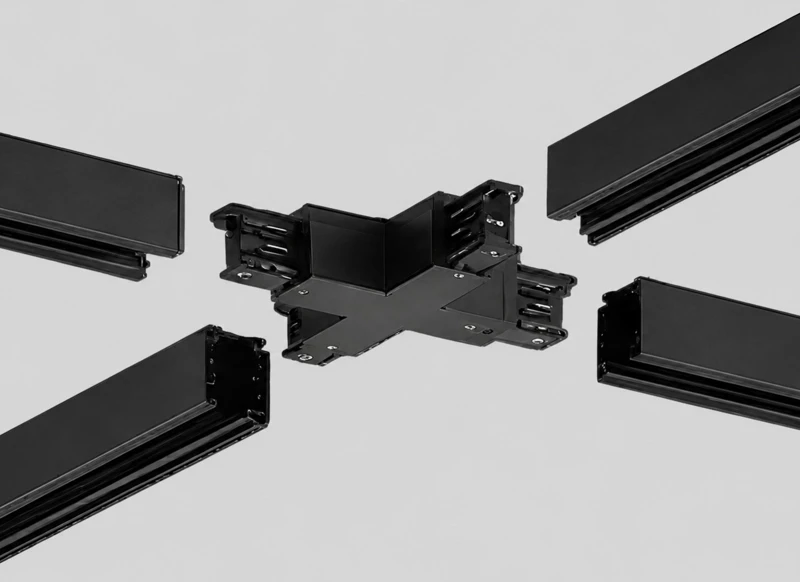
Собирайте прямые линии, углы и разветвления из шинопровода и соединителей одной серии.
Один шинопровод позволяет разделить светильники на три независимые группы управления.
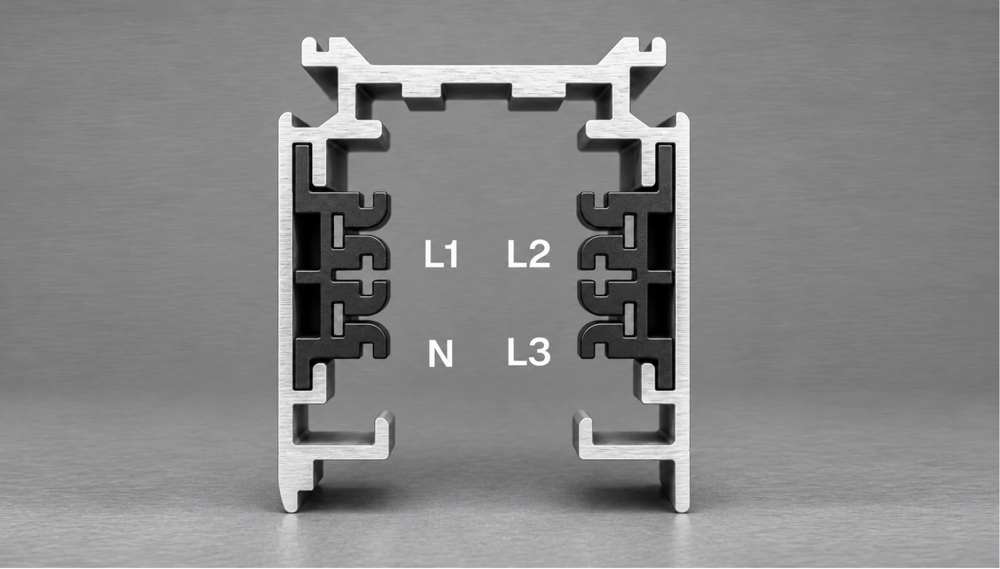
Три линии подключают к отдельным группам светильников. Нулевой проводник у них общий.
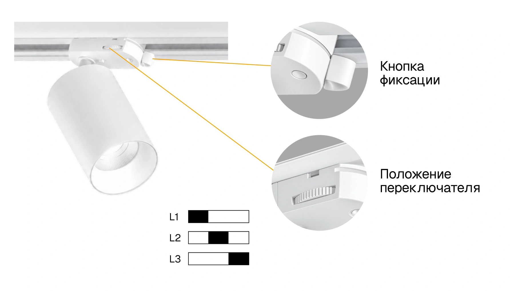
На адаптере есть переключатель с положениями 0 · 1 · 2 · 3. Положения 1, 2 и 3 подключают светильник к линиям L1, L2 и L3 соответственно.
Светильники одной группы могут находиться в разных местах трека.
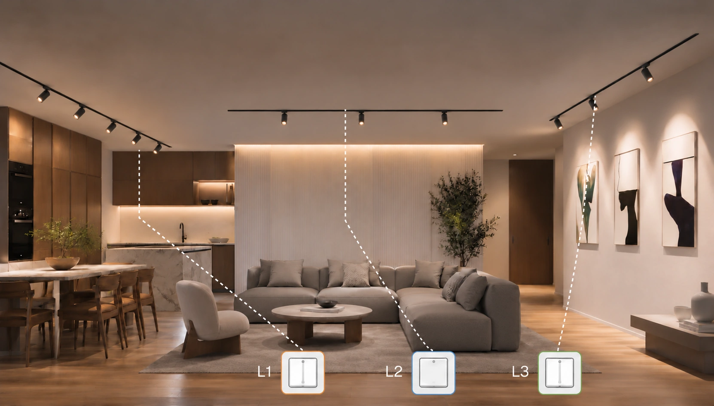
При соответствующем подключении группы включаются вместе или по отдельности. Например, так можно распределить задачи:
Три группы включаются и выключаются независимо друг от друга.
Можно менять яркость каждой группы, если светильники и драйверы поддерживают TRIAC.
До трёх независимых групп в одной трековой линии.
Выберите расположение трека под конструкцию потолка и архитектуру помещения. Для каждого способа предусмотрены свои крепления.
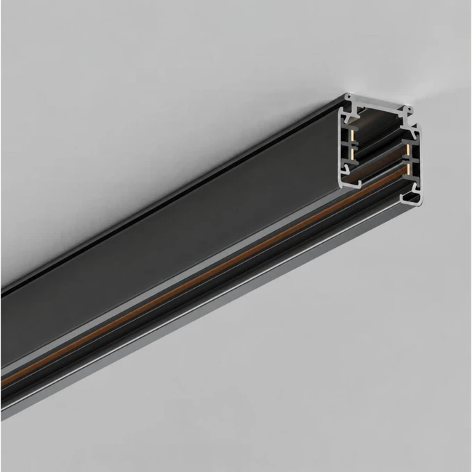
Крепление шинопровода к поверхности потолка или стены с помощью саморезов.
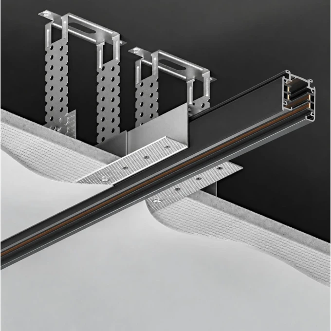
Установка шинопровода в закладной профиль. Конструкцию согласуют до отделки потолка.
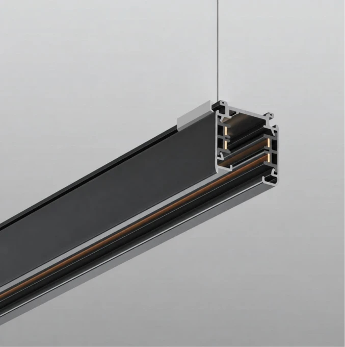
Крепление на тросовых подвесах. Для стыков участков предусмотрен усилитель.
Один тип алюминиевого трека, три длины и два цвета. Подберите исполнение и дополните его соединителями и креплениями.
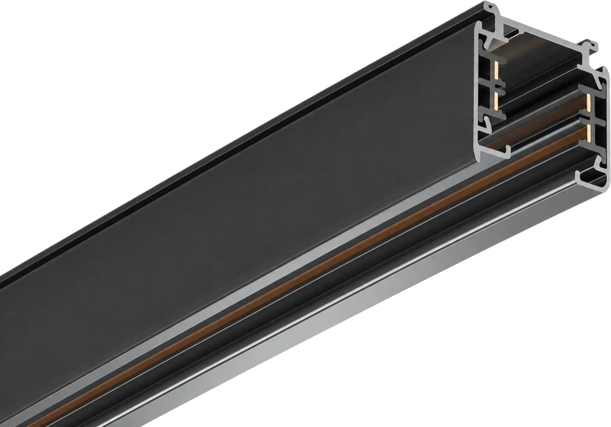
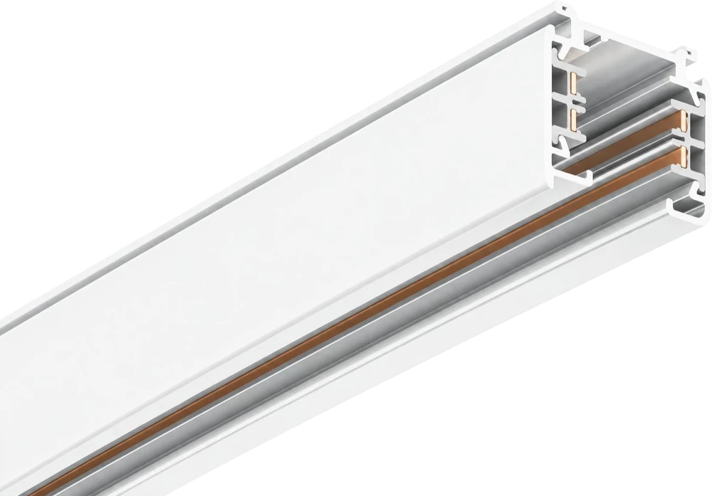
| Длина | Чёрный | Белый |
|---|---|---|
| 1000 мм | 01-03-001-2 | 01-03-001-3 |
| 2000 мм | 01-03-002-2 | 01-03-002-3 |
| 3000 мм | 01-03-003-2 | 01-03-003-3 |
Цены, наличие и сроки поставки — в карточках товаров.
Соедините участки шинопровода, выберите точку ввода питания и добавьте крепления. Геометрия линии определяет набор комплектующих.
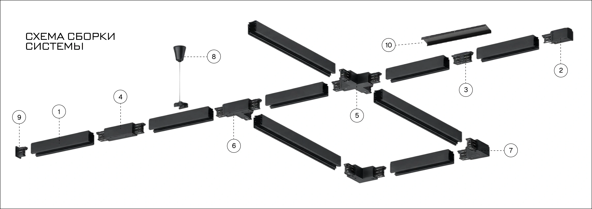
Основа трековой линии, на которой размещают светильники. Внутри проходят линии L1, L2, L3 и общий нулевой проводник N для трёх групп управления.
Подаёт питание на шинопровод с торца линии.
Соединяет два участка по прямой и передаёт питание между ними. Без ввода питания.
Соединяет участки по прямой. Позволяет подвести питание в точке соединения.
Соединяет четыре участка шинопровода с передачей питания. Используется для создания Х-образного пересечения трековых линий.
Соединяет три участка шинопровода с передачей питания. Позволяет сделать ответвление от основной линии.
Соединяет участки под углом 90° с передачей питания.
Тросовый подвес с чашей для установки шинопровода ниже потолка.
Закрывает открытый торец шинопровода и завершает линию.
Жёстко фиксирует стык двух участков. Применяется при подвесном монтаже.
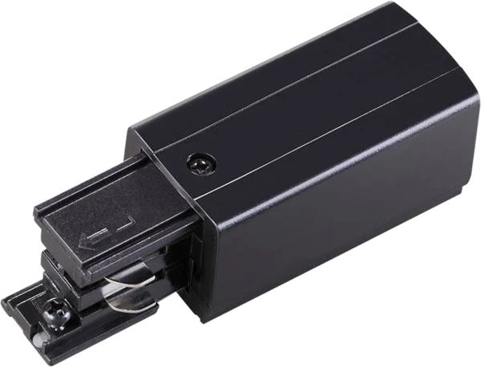
Подключение питания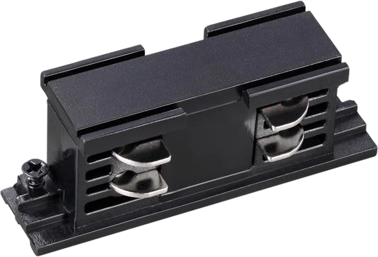
Соединитель питания встык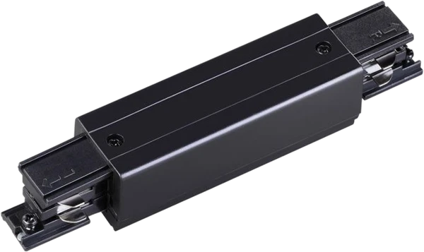
Прямой соединитель питания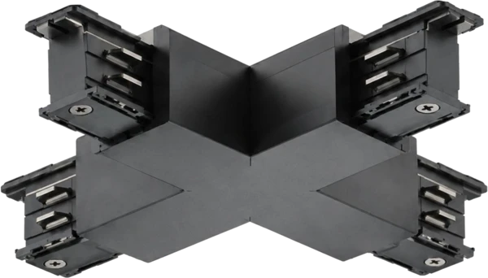
Х-образный соединитель питания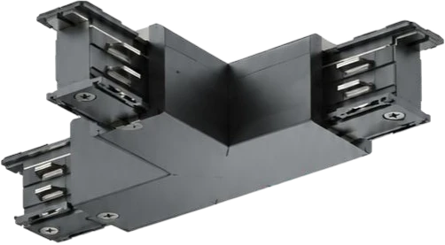
Т-образный соединитель питания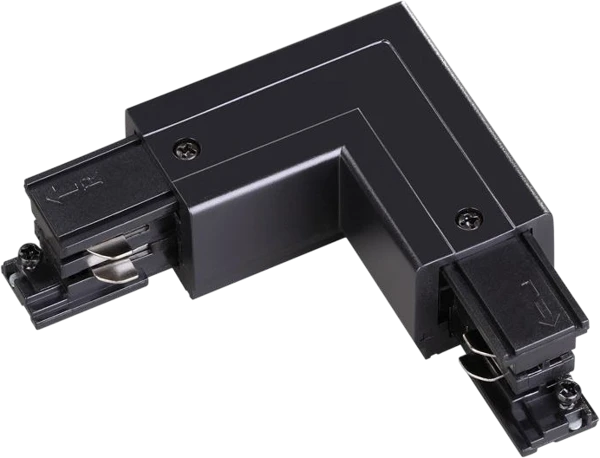
Угловой соединитель питания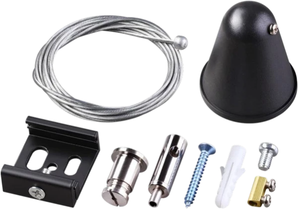
Подвес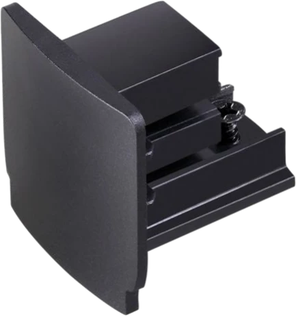
Заглушка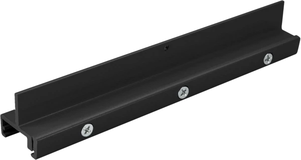
Усилитель стыкаПрямые, угловые, Т- и Х-образные соединители позволяют собирать линии и разветвления. При подборе углов учитывают направление трека и положение контакта заземления.
Питание подводят через ввод питания или подходящий соединитель. Внутренний стыковой соединитель передаёт питание между участками, но не служит точкой его ввода.
Шинопроводы и комплектующие для вашей трековой линии. Выберите раздел и откройте нужную позицию в каталоге.
Светильники — скоро в продаже
Трековые светильники для акцентного, направленного, общего и декоративного освещения. Линейка находится в разработке.
Точные технические характеристики и исполнения пока не определены.
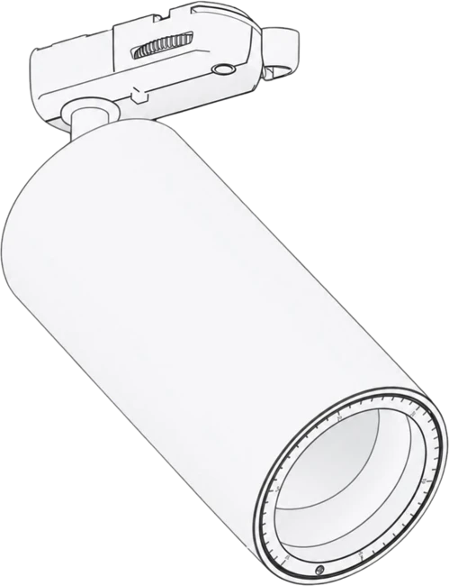
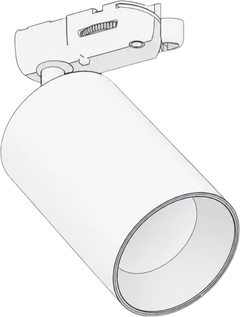
Начните со способа монтажа и формы световой линии. Это поможет подобрать состав системы под ваше помещение.
Определите способ установки, длины участков и цвет шинопровода.
Выберите соединители, крепления и место ввода питания в систему.
Уточните исполнения светильников, распределение по группам и способ управления.
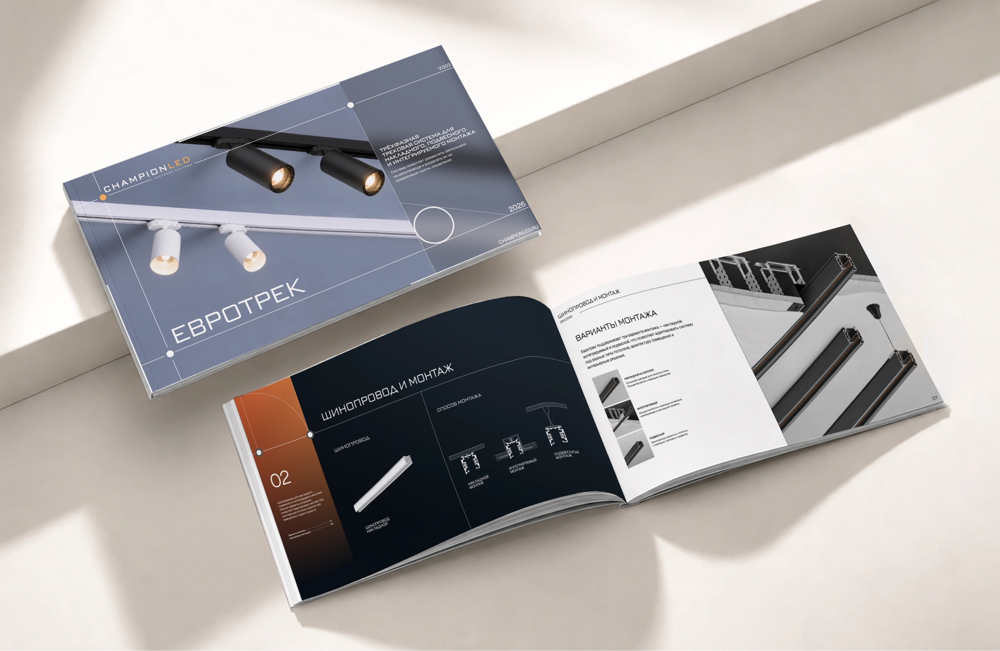
Оставьте контакты, чтобы получить каталог и материалы по выбору и монтажу системы «Евротрек».
Гарантия 3 года · Условия гарантии и возврата
| Элемент | Чёрный | Белый | Поставка |
|---|---|---|---|
| Подключение питания | 01-04-001-2 | 01-04-001-3 | |
| Соединитель питания встык | 01-04-002-2 | 01-04-002-3 | |
| Прямой соединитель питания | 01-04-003-2 | 01-04-003-3 | |
| Угловой соединитель питания | 01-04-004-2 | 01-04-004-3 | |
| Т-образный соединитель | 99-04-007-2 | 99-04-007-3 | Под заказ |
| Х-образный соединитель | 99-04-008-2 | 99-04-008-3 | Под заказ |
| Заглушка | 01-04-005-2 | 01-04-005-3 | |
| Подвес 2 м | 01-04-006-2 | 01-04-006-3 | |
| Усилитель стыка | 99-04-009-2 | 99-04-009-3 | Под заказ |

ПРОЕКТНАЯ РАБОТА LEDMONSTER
Передайте план помещения или спецификацию. LEDMONSTER поможет подобрать освещение, подготовить светотехнический расчёт и состав оборудования. Состав и условия работ согласуются отдельно.
Вопросы о системе
Состав, управление и монтаж трековой системы «Евротрек».
На одном шинопроводе можно организовать до трёх независимых групп светильников. В треке предусмотрены линии L1, L2, L3 и общий нулевой проводник N. Схему питания и защиты определяет специалист при проектировании.
Да. Группу выбирают переключателем на адаптере. Положения 1, 2 и 3 соответствуют группам L1, L2 и L3, которые при соответствующем подключении управляются независимо.
В каталоге указан вариант управления через TRIAC-диммеры. Для него нужны светильники с совместимыми драйверами. Сам шинопровод не определяет возможность диммирования каждого светильника.
В каталоге для шинопровода указаны накладной, подвесной и интегрируемый варианты установки. Для интегрируемого монтажа нужен закладной профиль, для подвесного — тросовые подвесы и предусмотренные элементы усиления стыков.
В каталоге представлены длины 1000, 2000 и 3000 мм, в чёрном и белом цветах. Цены, наличие и сроки поставки уточняйте в карточках товаров.
Через ввод питания или предусмотренный для этого прямой, угловой, Т- либо Х-образный соединитель. Внутренний стыковой соединитель передаёт питание между участками, но не используется для ввода питания.
Светильники находятся в разработке. Они появятся в продаже после завершения проработки линейки. Технические характеристики, исполнения и дата поступления пока не определены.
Индивидуальную работу под объект ведёт LEDMONSTER. Можно передать план, альбом проекта или спецификацию через кнопку «Обсудить проект с LEDMONSTER». Состав и условия работ согласуются отдельно.